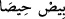

Tâcu’l-masâdır’da şöyle izah edilir: Geceleri yolda dolaşmak, şehirlerde olmak.
Anlamı “yarık açtılar” şeklindedir. Yani dağda yarıklar, delikler ve geçitler açmışlar,
oralarda yaşayan halkları mağlup etmişler ve onlara üstünlük sağlayarak kendilerini
zelil duruma düşürmüşler, vatanlarını istila etmişler ve topraklarında tasarrufta
bulunmuşlardır. Âyet, yeryüzünün her tarafında ölüm korkusuyla dolaşmışlar anlamına
da gelebilir. Fiilin başındaki ‘fâ’ harfi, sebebiyet bildirmek ve onların zorbalıklarının
şiddetinin kendilerini batırdığına ve onlara kaçacak delik arama gücü verdiğine delalet
etmek için gelmiştir. İkinci anlama göre tevil edecek olursak fâ harfi sadece takib
bildirmek için gelmiş olur. Âyette geçen tenkîb ve nakb fiilinin aslı, bir işi tetkik etmek
ve araştırmak anlamına gelmektedir. Bundan dolayı Keşfu’l-esrâr’da şöyle geçer: Yani
uzak yerlere gittiler ve işleri, sebepleri araştırdılar.
İmruü’l-Kays bir şiirinde şöyle söyler:
Ufukları dolaştım ve sonunda
Geri dönüş ganimetine razı oldum
“Nakb” kelimesi, uzak olmak, yeryüzünde çok dolaşmak, şehirlerde yol almak yani
ticaret için seferlere çıkmak, pek çok mal ve eşya elde etmek anlamlarına gelir.
Fethu’r-Rahmân’da şöyle geçer: Yeryüzünün yarıklarında yani yollarında dolaştılar.
“Kurtuluş var mı!” “Mahîs” kelimesinin aslı, çok zor bir durumda kalma anlamındaki
“
yani şiddete düştü” deyimine dayanır. “
” fiili, doğru yoldan ayrılıp şiddet
ve zorluklara düşme anlamında da kullanılır.
Kâmus’ta mahîs’ın kaçış yeri olduğu belirtilir. Bu durumda âyetin mânâsı, “Kaçacak
bir yer var mı umuduyla beldeleri dolaştılar” şeklinde olmalıdır. Yani Allah’ın
emrinden ve azabından yahut ölümden kaçacak bir yer var mı? diye sormuşlardır.
Mahîs, cümle içinde mübtedâ konumunda olup haberi cümlede zikredilmemiş, gizli “
/onlar için” kelimesidir. “Min” ise zâiddir.
Onların ölümden veya Allah Teâlâ’nın kazâsından kurtulup sığınabilecekleri hiçbir
yer yoktur. Ölümle ilgili hüküm nâzil olduğunda hiç kimse bu konuda onlara yardım
edemez.
Cümlenin, kendileri için kaçacak yer olmayacağını belirten kelâm-ı müste’nef olması
da mümkündür. Yani ölümden kurtuluş yoktur, yani kurtulmadılar. Yine Hak Teâlâ’nın
cezasından halâs olamadılar.
Eğer Mekke halkı küfürde ısrarcı olurlarsa geçmiş ümmetlerin başına gelen şeye
kendileri de hazır olsunlar. Zira bu işin varacağı yer helak ve sonu da azaptır.
Hz. Âdem (a.s.)’a vefâ etmeyen zaman sana neden vefâ göstersin? Hz. Nûh (a.s.)’ın
bile ömrü sona eriyorsa senin ömrün nasıl bâkî olur? Hz. Halîl (a.s.)’ın üzerine hücûm
eden ecel sana nasıl yumuşak davranır? Hz. Süleyman (a.s.)’a saldırmak için gizlenen
ölüm sana nasıl müsâmaha gösterir?